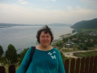

Анна Кулинченко

* * *
Я ничего не знала о врагах,
И не могла любить своих врагов.
Но затаилась злоба в двух словах,
И я в ответ сказала много слов...
И вот друзья со мной не говорят,
В моей душе полным-полно обид.
Я ненавижу этот хитрый взгляд,
А мне любить мой трудный долг велит.
1990
* * *
Не приписывай ему
Своих мыслей и движений.
Не развеет злую тьму
Свечка радостных мгновений.
За улыбкой снова он
Станет мрачным и усталым.
В мире не твоем рожден
Он тебе не станет парой.
И платить двойной ценой
Будешь ты за счастья тени,
Потому что был он твой
Только несколько мгновений.
1995
* * *
Убила время на ошибку
И потеряла силы в спешке.
Устала я искать улыбку
В твоей изысканной насмешке.
Тоска в деревьях на площадке
Предгрозовая тишина..
По жизни пламенной и шаткой
Иду одна. Совсем одна.
Душа беспомощна как пешка
И не слова твои виною,
Но больно. Даже не насмешка,
А снисхождение такое.
1992
* * *
Где-то за морем арфа играла.
Далеко и безрадостно... Где-то
Вечер. Волны лежат у причала.
Здесь зима, там свободное лето...
Я устала и ждать и метаться,
Вопрошать - и не верить ответам.
Я хочу навсегда оказаться
Там, где волны, свобода и лето!
1990
* * *
Где-то за морем арфа играла.
Темнота наступала на сердце...
Захотелось начать все сначала
Все зажечь и самой загореться.
Отчего ты сидишь равнодушно
Если мир разлетается в брызги?
Что тебе для развития нужны
Бесконечные страшные риски?
Неужели задуманы были
Наши споры и наши начала,
И покуда росли мои крылья,
Я тебя понемногу теряла.
1990
* * *
Не исчезай! Останься рядом!
Твой голос тихий и покой
Меня охватывают разом,
Когда я говорю с тобой.
Я просто рада. Только рада -
И все. И больше ничего.
Но я ведь знаю силу взгляда
И силу слова твоего.
И если говоришь с другими,
Мне вдруг захочется чуть-чуть,
Чтоб стали навсегда моими
Твой ровный голос, взгляд и путь...
Но ты исчезнешь очень скоро,
Уйдешь, улыбкой ослепя,
И только радость разговора
Оставит память от тебя.
1991
* * *
Когда я стану сильной
Настолько, что смогу
Ответить пообидней
И другу, и врагу,
То всю вот эту силу
Потрачу на тебя:
Лицо невозмутимо
Как старая резьба,
И речи так надменны,
И взгляды так важны.
А я слаба, как пена
На гребне злой волны.
Но с каждым днем расту я
Прикрывшись немотой.
Добьюсь я, торжествуя,
Победы над тобой!
1991
* * *
Скажи мне, что несовершенно?
Что я еще не доказал?
И ты изменчива как пена,
И я зарвавшийся нахал.
Ты не играй со мной словами,
Ведь я гуляка и бреттер!
Лежит не пропасть между нами,
Всего лишь светский разговор.
В тебе все лицемерно, зыбко.
Все чисто женские черты.
Какая страшная ошибка -
Девчонка я, мужчина - ты.
1990
* * *
Здесь мы жизнь свою доживем
Вспыхнем факелом - и догорим.
Это нас с тобой назовут потом
Веком сумрачным и золотым...
Здесь ходить будет кто-то другой,
А История будет - про нас.
Но нельзя заменить нам с тобой
Ни вчера, ни потом на сейчас!
1990
* * *
Улица как декорация.
Ночь - затянувшийся фильм.
Города чуждая грация,
Дождь, неизвестность, огни...
Осени плач запоздалый.
Фары и всплески машин.
Люди здесь только причалы
Страшной тоски без причин.
1989
* * *
Между громадами бетонными
Обрывок пламени зажат.
Дома проемами оконными
На запад сумрачно глядят.
А люди едут на работу,
Спешат, как выйдут за порог...
И редко оглянется кто-то
На торжествующий восток.
1989
* * *
Есть на свете обитель,
Где ни бед, ни тревог.
Там единственный житель
Мелкий белый песок.
Там не носится время,
Закусив удила.
Там не мучает бремя
Спешки, горечи, зла...
Там покорное небо
Рядом, около ног...
Нет ни зрелищ, ни хлеба.
Только мелкий песок.
1989
* * *
Всадником призрачно-легким
Кромку снега взметая в галоп
Ударяется ветер, играя.
Мрачным елям в нахмуренный лоб.
1989
* * *
А где-то копытами чавкает снег...
По серому скудному сердцу России
Идет незнакомый нерадостный век
Осматривать землю впервые.
Нам ждать еще десять растрепанных лет,
А он, уже морщит заранее губы,
пришел посмотреть как и что этот свет,
У брата узнать - как здесь - любо - не любо?
Испуганный, страшный вернется домой,
Не вынеся грусти осеннего дня.
И скажет: а знаешь что, двадцать второй,
Сходи-ка на землю ты вместо меня!
1991
* * *
Рашиду.
Усталый всадник примчался с закатом.
За ним пожаром горело небо.
Он был чужестранцем, он был солдатом
От рук его пахло и сеном и хлебом.
Он весь был скорость, скорость и пламя
Отдохнул немного и снова в путь
А ветер закатный остался с нами
Стучит в окно, не дает уснуть...
Сменялся новый закат рассветом,
Ложился, падал и таял снег.
Но знаю, верю - по миру где-то
Скачет и скачет тот человек.
И промчится когда-нибудь, тьму обгоняя
На усталом коне, веселый и злой
Неизвестный солдат незнакомого края
По дороге назад, по дороге домой.
Осень 1991
* * *
Сильный ветер срывает капли с берез.
Плачет небо обидным январским дождем.
Нет на лицах уже ни улыбок, ни слез...
Ждем.
Мы стоим еще тихо, покорно шутя,
Ведь у каждого что-то лежит про запас.
Но бесследно исчезнет чуть-чуть погодя
Мягкость шутки из слов - и из глаз.
1992г.
* * *
Я праздники отбросил навсегда.
Я отдых позабыл и гнал коня..
Я огибал огни и города
Я понимал - они не для меня.
Я догонял - и я догнал закат.
Но то был край всех сил, да и земли.
Не для меня был поворот назад,
Но мы по морю мчаться не могли...
И я вернулся в скорбный мир людей.
Уже смиренно и уже пешком.
Мне было все равно куда и где.
Я постучался в самый первый дом.
Поймешь меня наверно, только ты.
Вот отчего мой постоянный бег -
Я полюбил просторы пустоты
А я всего лишь слабый человек..
1992
* * *
Я скакал по дорогам Российским
Грязным, горестным и беспощадным.
Забывал про знакомых и близких
И сочувствовал всем безлошадным.
Но однажды догнал меня поезд
Мчался мимо далеко-далеко.
Может быть побываю там после,
Как вернусь, как отпустит дорога.
А пока я еще слишком занят
Слишком много на свете вопросов
И широкие степи так манят,
Как не манят стальные колеса.
* * *
Лампа... Сумерки прячутся в дальнем углу.
Непокорные мысли несутся вразброд...
Каждый вечер стираю с души похвалу.
Позолоты липкий налет.
1990
* * *
Заглянул в окно веселый месяц.
Ветер, постучавшись, попросил
Чтобы вместе с ними я отметил
Пробужденье сил.
Звезды радостно глядели с неба
Храм до них тянулся головой...
Я стоял. Я будто бы и не был
Связан сам с собой.
Полон сил, дыхания, разврата
Я молчал. А небо надо мной
Было неподвижно, черно, свято...
1992
* * *
Кто выйдет - буду рада
Чего-нибудь в ответ
Скажу. А здесь прохлада
И так прозрачен свет
Да только кто же выйдет
Из праздника ко мне?
Никто меня не видит.
Я прислонюсь к стене.
Я как с чужой планеты
На празднике чужом
Встречаю здесь рассветы
И думаю про Дом.
Он вам далек как звезды,
Как ветер близок мне.
И мне совсем не просто,
Что годно вам вполне.
Меня простите, люди,
За злобу, за хандру.
Со мной иначе будет -
Ведь я не здесь умру.
Я улечу на небо,
За ветер и зарю...
Стою одна на свете
И с веткой говорю...
19 сентября 1992
* * *
Год за годом пробегают мимо,
многое становится ненужным.
Тот, кто раньше был привычно милым
Станет недостойным просто дружбы.
Год за годом, осень за весною
То печалит нас, то согревает.
То, что разлучило нас с тобою
И других людей разъединяет -
То непониманье роковое
Слов, улыбок, песен и вопросов...
Настроенье грустное такое
Неужели, потому, что осень?
1990-1998
* * *
Автобус идет до метро
А там - полчаса до вокзала.
Уйти несмотря ни на что
И жизнь переделать мечтала.
Но держат меня якоря
Сперва незаметные вовсе
И быстро конец января
В весну переходит и в осень.
199?
* * *
Это только набор рифм.
Не забыть бы их записать.
Сверху штампом секретный гриф,
Чтоб никто не посмел взять..
Пусть один только знает Бог
Как мне хочется говорить,
Как среди городов и домов
Тяжело молчаливой жить.
1990
* * *
Помоги мне, музыка, забыть
Этот бесконечный бег и бой.
Не дышать, не двигаться, не жить,
Несколько минут не быть собой!
Ничего себя не заставлять,
Никого не звать и не просить.
Ничего хорошего не ждать,
Не дышать, не двигаться, не жить.
Помоги мне, музыка, забыть
Все, чего простить я не могу.
И парням знакомым не звонить,
И не улыбаться на бегу...
Помоги мне, музыка, играй!
Пусть осенний ветер за окном,
Пусть недостижим веселый май,
Пусть хотя бы станет все равно!.
1997
* * *
Я кажусь себе сильной
Я так быстро иду
Отголоски от фильма
Повторяя в бреду.
На какое-то время
На десяток минут
Люди жизни и фильма
рядом в сердце живут...
По вечерней дороге
Под осенним дождем
Мы чужие тревоги
В сонных душах несем.
1990
* * *
Ночь дождлива, темна и пуста.
Шепот капель в печальной листве...
Как мне нравится темнота!
Как вдруг жить захотелось мне!
За рекой еле видны в ночи
Фонари из других деревень..
Вся душа напряженно молчит...
За плечами еще один день.
1993
* * *
Преображенье. Свет осенний
И холод ясный по утрам.
Из летних праздников последний
Еще не отданный делам.
Холодный ветер над полями
И облака белы как снег,
И чувство, будто поднял знамя-
И с ним идешь, идешь сквозь век.
И сам я легок, смел и светел.
Не страшно мировое зло.
И мне не грустно, хоть заметил,
Как лето в осень перешло.
1993
* * *
Шел по улицам города ветер.
Дождь горстями бросал на асфальт.
Было мне в этом сумрачном свете
Ничего в этом мире не жаль.
Ничего не просила у Бога,
Никого не видала во сне.
И мне нравилась эта дорога
В одиночестве и тишине.
Весна 1994
* * *
Друзей и братьев мы не выбираем.
Нас сводит жизнь случайно наобум.
Пускай людей не часто понимаем,
Но любим в них лицо, улыбку, ум.
Куда бы нас не увели победы
и самые опасные пути,
От дружеского вкусного обеда
Нам никуда по жизни не уйти.
И если горе душу перепашет,
Так радостно, что кто-то любит, ждет,
Чего-нибудь хорошее расскажет
И вкусный тортик к чаю испечет.
1994
* * *
Отшумели вчера ручьи.
Зашумела опять листва
И под ноги ляжет мои
Всем своим асфальтом Москва.
Будут тучи висеть над рекой.
Ты не бойся, дождя еще нет...
Отчего ты мрачный такой
и все время молчишь в ответ?
Весна1994
* * *
Все это сзади, за спиной.
Лицо с застывшим изумленьем,
Тоска накрывшая волной
И униженьем, униженьем...
Улыбка, сладкая как ложь,
При расставаньи и при встрече...
И знаю я, что ты уйдешь...
И удержать тебя мне нечем.
1994
* * *
Я не верю, что упаковка
Стоит больше, чем вся душа.
Полюби меня слабой, неловкой,
Улыбнись потеплей, не спеша.
Полюби некрасивой и горькой,
Потому что красивое - ложь.
Я могу стать другой, но только,
Если ты со мной рядом пойдешь.
1994
* * *
Как украшено небо луной
И короткой полоской заката!
Мне сегодня так грустно одной,
Я считаю себя виноватой.
Отчего, никого не любя,
Я не стала спокойной и мудрой?
Отчего вспоминаю тебя
Каждый вечер и каждое утро?
1994
* * *
На перекрестке под окном
Перекликаются машины.
Пугая будущим дождем,
Нависли тучи так картинно...
Сегодня я опять одна
И кажется - одна на свете.
Так мрачно шепчет тишина
И все стучится в окна ветер.
1994
* * *
Последняя гроза, как вспышка света.
Свинцовой грудой давят облака.
И роща рыжая уже полуодета
Везде царит осенняя тоска...
Еще бывает жарко и привольно,
Но сумерки все раньше и темней.
И по-осеннему вдруг стало очень больно,
Что потеряла близких мне людей.
1994
* * *
Закружились, наконец, метели.
Первый снег, веселый снегопад.
Вот уже дорожки побелели
И так рано отгорел закат...
Все еще стоят березы в рыжих
Несуразных рваных париках.
Небо хмурится все ниже ниже, ниже
День как вечер тянется впотьмах...
Я болею слабостью и ленью.
Дома тишина и полумрак.
Я смотрю, как борется с метелью
Рыжий жалкий мокрый березняк.
20.10.94
* * *
Отбросив все дела,
Хоть их не так уж мало,
Весь день тебя ждала,
И даже не устала.
1994
* * *
Нас с тобой разделяют Бог,
Родители, память, страх...
И вот, мы стоим с тобой
В каких-нибудь двух шагах.
Ты долго о чем-то молчишь,
Чуть голову наклоня...
Широкоплечий крепыш,
А ты ведь не любишь меня.
Пробью я любую стену,
Рискуя своей головой.
И лишь одного не пойму -
О чем говорить с тобой.
Лето 1994
* * *
Гонка. Безумная гонка.
Сотни и тысячи верст...
В сердце усталом глубоко
Спрятался вечный вопрос.
Горько от злого упрека,
И от ухода друзей.
В сердце покинутом гонка
Серых бессмысленных дней.
Праздники, будни - все гонка.
Но не хотим умирать -
Хочется отдыха, только
Чтоб поровнее дышать.
Злоба житейского моря
В душу стучится волной...
Боже, забудь наши ссоры!
Даруй нам Вечный покой!.
1994
* * *
Мой город родной беспокоен.
Шумит за окном по ночам.
А я одинок и доволен
И кудри бегут по плечам...
...Свои затаенные мысли
В душе сохраню, словно храм.
Пусть тучи над городом виснут
И город не спит по ночам.
4 октября 1993
* * *
Усталое тело все просит покоя.
Душа на вопросы мне не отвечает.
Потеряно время., и сердце больное
От слабости духа страдает, страдает.
Скажи, почему состоянье такое,
Что я не могу ни понять, ни исправить?
За этой усталостью прячется горе?
А может быть, скоро взбунтуется память?
Тоска разрастается с каждым дыханьем.
Иконы - и те смотрят скорбно и строго...
О Боже мой, ведь до Тебя расстоянье
Растет, я же вижу, растет понемногу!
Январь1994
* * *
В городе смута.
Над городом дождь и тревога.
В клинике тихо.
Нет света и очень тепло.
октябрь 1993
* * *
Золотистый и бездонный
Взгляд усталых карих глаз.
Я кажусь еще влюбленной,
А люблю уже не Вас.
Разведенный и бездомный,
Разве нужен мне такой?
Но мне жаль, что Вы, влюбленный
И внимательный - не мой.
1993
* * *
Уходит год. Обычный, серый.
Истертый, скучный и простой.
И все же, не теряя веры,
Еще надеюсь на другой.
На новый, начатый печально,
Но обещающий добро.
А может, радостью нечайной
В судьбе заблещет серебро?
Невозмутимо как конвойный
Шагает время за спиной.
Как хорошо, что был спокойный
Обычный год, совсем простой.
Декабрь 1993
* * *
Остановись в своем паденье.
Что принимаешь за полет!
Признайся, в этом нетерпеньи
Ты потеряла целый год.
И наплевать на все награды,
Раз нет надежды на любовь.
А вера - только для парада
Среди других красивых слов.
И эту серенькую зависть
Уже ничем не обмануть
Я не могу себя заставить
Забыть как хочется уснуть!
Забыть о том., что нужен кто-то,
Что слишком много трудных дел....
Не просыпаться, не работать,
И чтоб по крыше дождь шумел!
Декабрь 1998
* * *
Не хочу ни читать, ни писать.
Никого не хочу лечить!
Ни ходить, ни сидеть, ни лежать!
Ни, тем более, говорить!
Небоскребы в окно глядят.
Время мимо проходит зря.
Не хочу ни зимы, ни дождя,
Ни июля, ни декабря!
Не хочу ни друзей, ни подруг.
Ни свободного в праздники дня!
Знаю только: нигде вокруг
Дела нет никому до меня!
1998
* * *
Для меня - событие.
Для тебя - мгновение.
Солнечного взгляда
Зайчик на воде....
Все мое сомнение
Унесет течение
И оставит только
память о тебе.
1990-1998
* * *
Да пусть застрелятся враги.
Пусть разбегаются друзья!
Мне дела нет до мелюзги,
А крупным -что такое я?
Пусть вьются кудри у виска,
И пусть улыбка на лице.
По сердцу мечется тоска.
И только смерть и боль в конце.
А вслед за хмурым декабрем
Придет опять несносный март.
Ну для чего же мы живем?
Все также много лет подряд.
И я иду. И снег идет.
И переходит в мелкий дождь...
И даже в праздник - Новый год
Ты не позвонишь. Не придешь.
Декабрь 1998
* * *
Вы полагаете,
сердце болит где-нибудь слева?
Глупости!
Сердце не может болеть
Целые сутки.
1998
* * *
Я не имею права ревновать.
Я слишком некрасивее и злее.
Я не могу блистать, как ты блистать
И улыбаться всем в глаза не смею....
Я не имею права ревновать.
Имею право только погрустить,
Когда твою победу замечаю,
Имею право двигаться и жить.
Живу. Дышу. Дни серые считаю...
И не имею права ревновать.
Как ты красива! Свет недобрых глаз
Опять победой новой пламенеет..
Как ненавижу я тебя сейчас!
И не имею права, не имею
Я не имею права ревновать.
1994
* * *
Последние дни зимы
Приходятся на весну...
И, чтоб не расстались мы,
Прощу я опять и пойму.
Все то, что уж произошло,
И то, что еще идет.
Пусть все мировое зло
Растает как этот лед!
1999
* * *
Я положил под стенами Норстоля
Свое тридцатитысячное войско....
Н.Гоманьков.
На личном фронте пораженье.
Бросая пушки и знамена,
Бегу в печали и смятеньи
Беспомощный и обреченный.
Враг беспощадно выжег сердце
С востока, запада и юга.
Бегу на север отсидеться
Дождаться весточки от друга.
Горят обозы и предместья
Уходят беженцы с окраин.
Мне не до памяти и мести
Я побежден, устал и ранен...
Но убежать и бросить войско
На личном фронте невозможно.
И, голову подняв геройски,
Иду в грязи по бездорожью.
Самонадеянность былую
С усмешкой горькой вспоминаю
Но я о прошлом не тоскую
Я снова войско собираю!
1999
* * *
Мне хочется спать.
Мне не хочется жить.
И ждать уже нечего - даже дождя.
И так бесполезно с тобой говорить -
Глаза равнодушно глядят.
Холодный, спокойный, да просто чужой.
Мне все это не в первый раз.
Но как же мне больно при встрече с тобой
От взгляда твоих серых глаз!
А я еще буду смеяться и петь
И буду гулять и мечтать...
И стоит мне только чуть-чуть захотеть...
Но хочется спать. Только спать!
1998
* * *
Дождь.
А по радио - Шуберт.
И впереди - воскресенье.
Знаешь, а все еще будет,
Только немного терпенья!
1997
* * *
Машины проезжают под окном.
Спускаются к селу, спешат под вечер...
Мне грустно в одиночестве моем.
Мне развлекаться незачем и нечем.
1990-1998
* * *
Так холодно. Непоправимо, зря.
Я говорю с тобою без просвета.
И все ошибки злого декабря
Врываются в расплавленное лето.
1998
* * *
Хоть никому не нужен этот стиль,
Мои надежды и мои глаза,
Польсти мне, зеркало, пожалуйста, польсти!!
1989
* * *
Я не имею больше права
Считать тебя своей судьбой-
Ты как подставка и оправа,
Ты ни хороший, ни плохой -
Ты никакой!
1992
* * *
Легко и радостно, быть может,
А, может, в череде невзгод
Где мир испорчен, зол и сложен
Вся наша жизнь в песок уйдет..
Но мы, друг друга не теряя,
Еще живем, еще горим...
Всю жизнь кому-то озаряя
Одним сочувствием своим.
1993
* * *
Ты думал - это ты ушел?
Нет. Это я ушла.
Качнулись стены, окна, пол
И краешек стола...
И злоба поплыла в душе,
И руки заболят...
Я где-то видела уже
Такой холодный взгляд.
Но это я уйду сама,
Как и сама пришла-
Как улетучится зима
От вешнего тепла
И как тепло потом уйдет -
Спокойно, без тоски
И мягко ляжет белый лед
На черноту реки.
1994
* * *
Ты говорил, что жизнь коротка,
Ты говорил - надо спешить..
Бьется упрямо в стенку виска
Синяя жилка , последняя нить.
Времени будет всегда не хватать,
Но никогда не смогу позабыть,
Как ты решил без меня уезжать.
Как я решила остаться и жить.
1998-1999
* * *
Холодны как зеркала
Ваши усталые лица
С кем бы из вас я смогла
От безнадеги забыться?
1999
* * *
Я вру. Тебе, себе и людям.
Об этом знает только Бог.
Давай, мы ссориться не будем
Итак достаточно тревог!
Ах, я сама уже устала
Друзей терять и врать в глаза...
Но я всегда подозревала,
Что правду говорить нельзя.
1998
* * *
...Мне надоели яркие закаты,
Прогулки, комплименты и цветы..
И мне не нужен, милый, даже ты.
И в этом я совсем не виновата!
1998
* * *
Не думай, будто ты неотразим!
На свете очень много ярких Дим!
1998
* * *
Февраль окончен навсегда.
Душа втянулась в март.
А с нею прежняя беда -
Твой рыжеглазый взгляд.
Я не могу тебя терять.
Покой давно забыт.
Мне остается все прощать -
От взглядов, до обид!
1998
* * *
Заброшенный дворец усадьбы.
Потрепан старый мост.
Мир от крестин до самой свадьбы
Когда-то был так прост!
Из мира, где царят обманы
С начала, до конца
Приду я утром рано-рано
Подумать у крыльца.
1989
* * *
У всех свое. У каждого свое.
У всякого достаточно тревоги.
И каждому потребно забытье,
А счастие даровано немногим.
Поэтому теперь не торопись
И горестные мысли затаи.
Перед тобой лежит дорога в жизнь,
Где люди лишь попутчики твои.
1997
* * *
Вся жизнь как большое кино -
Ничто не случается дважды.
Уходит из сердца одно -
Другое наступит однажды.
И только с отчаяньем бой
Идет на душе постоянно.
И также над тихой рекой
Как прежде спокойны туманы...
1997
* * *
Нас случайность друг друга непрошенно
Лбами сталкивала, ставила рядом.
Говорили так много хорошего
О тебе люди трезвые взглядом..
Мы всю жизнь с тобой были друзьями..
Стали б большими в свой черед?
Нет. Судьба посмеется над нами,
Да и в стороны разведет.
1989
* * *
Если вместо подарка ты примешь слова,
А слова - они могут сквозь годы сиять -
Я скажу тебе только, что дружба жива,
И к тебе прибегу, стоит только позвать.
И что если размоет обыденность дней
Ту дорогу, что есть от тебя до меня,
Все равно позови, если станет грустней,
Если вдруг доживешь до печального дня.
1988
* * *
Наши руки пахнут формалином.
Лезет в ноздри и слезит глаза.
Позабудь о ладане старинном -
Новый век. Мы отменили чудеса.
Человек давно уже не чуден -
Распростерт, а в нем копается студент.
Лишь о страхе не забыли люди,
Покоряя таинства планет.
И все чаще в ужасе зверином
Мы с тоскою смотрим в небеса.
Только руки пахнут формалином.
Только трудно верить в чудеса.
Анатомия 1989 г.
* * *
Горят на улицах и в комнате огни,
А ночь они не в силах отогнать.
Как трудно говорить с обычными людьми!
Из мира снов в обычный мир вползать.
Все кажется задумчивой душе,
Что видела и поняла полмира.
Но тесно, как машине в гараже,
И дом не крепость - только лишь квартира.
1988
* * *
Здесь туман ест глаза точно дым.
Здесь и голод и стыд - позабыт.
Город спит. А в бездне над ним
Видно мне только - лампа горит.
Смотрят вверх будто дула ружей
Небоскребов стандартные крыши.
Хлопнув дверью, уходит лучший
Так как он в этом мире - лишний.
1988
* * *
Новый поезд. Опять встрепенулась душа.
Сердце вверх поднималось - и падало вниз.
И все, кто рядом со мною ждал -
Уже ушли - дождались!
И в скольженьи тупых пассажирских глаз,
В машинистах, глядящих из-за стекла
Я читала насмешку твою и отказ
Но ждала и ждала.
Я гадала и душу клала на весы.
А секунды настойчиво падали в час.
Я сто раз проверяла свои часы
Будто бы в первый раз.
Я поверю, что встречи не будет теперь,
Выйду наверх - и слезы размоет дождем.
Поезда и надежды ушли в туннель.
В этот черный проем.
1989-1998
* * *
Ночь в бусах фонарей
Над миром улеглась.
Над шумом улиц-змей,
Над тысячами глаз...
Что принесет с собой
Надменный новый день
Намеченных судьбой
Потерь и перемен?
1988
* * *
Ночь дома обняла
Сколько мягкости в ней!
Тишины и тепла
И веселых огней!
1989
* * *
Пусть я должна благодарить
За все, чем дни мои богаты,
Пусть ропот навлечет утраты,
Я так хочу иначе жить!
Я так хочу перешагнуть
Стать выше дней и их сомнений,
Но позади наверх ступени-
И мимо, в сторону мой путь.
За переменчивость решений,
За слабость тела и души
И за слова стихотворений
Меня, Господь, не накажи!
1989
* * *
Снег лежит вместо слез на ресницах,
Вместо строчек - деревья аллей.
И на их равнодушных страницах
Я прочла отголоски тех дней,
Чья мозаика просится в повесть,
Чья обыденность так тяжела.
Пропустила свой радостный поезд,
Опоздала, хоть долго ждала.
А теперь остается учиться,
Одиноко под снегом стоять...
На опущенных грустных ресницах
Будут слезы и снег замерзать.
1989
В автобусе 651
Те до верха, Те - до круга,
Эти - до конца.
Нам нельзя понять друг друга,
Рассмотреть лица.
Только ноги, чьи-то ноги
Едут подо мной
И ухабы всей дороги
Чувствую спиной.
1988
* * *
Мне хочется уснуть и все забыть.
Мне хочется уйти и хлопнуть дверью.
Мне комплемент не надо говорить -
Я в глупые любезности не верю!
1990
* * *
Я поверну часы лицом к стене.
На циферблат не хочется смотреть.
Я поживу без времени - во сне,
Я буду тратить время - не жалеть!
И я не буду больше вспоминать
До вечера - нет - даже до утра,
Что я одна, что нечего сказать,
Что я печальна и душой стара.
И пусть опять подходит новый год
Он ничего не обещает мне.
И время так безжалостно идет,
Хотя часы повернуты к стене.
1990
* * *
Всего две остановки с Кольцевой,
Я вышла за город и очень удивилась
Здесь небо поражает чистотой,
Здесь солнце как-то ярче засветилось.
Дорога вся блестящая от льда,
И снег покрыт алмазными слезами.
Мне кажется - я здесь жила всегда
В деревне Мамыри за пустырями.
Шумят машины, город далеко,
И хочется жить в доме деревянном.
И дышится спокойно и легко
И на душе так весело, что странно.
1991
* * *
На столе моем голубой конек
Голубой конек с голубым крылом.
Я должна учить, я дала зарок,
А в душе моей все давно вверх дном.
Поднялась душа, все чего-то ждет.
Я в учебник, а там - летний шум за окном.
В анатомии я провела весь год,
И грустил конек с голубым крылом...
Я с недавних дней потеряла покой,
Я небрежно учу вены рук и ног.
Неужели не станет моей судьбой
С голубым крылом голубой конек?
Я в учебник гляжу - вижу майский лес
И у горла душа так и рвется в полет..
И в ней борется к венам святой интерес
С испугом, что завтра по венам зачет.
1990
* * *
Полине
Раздувает юбки наглый пыльный ветер.
Мы на стадионе тренировку ждем.
Бегают мужчины с мячиком как дети
И стихи читаем мы с тобой вдвоем.
Нас потом разлучит жизни бурный ветер,
Но тогда ты очень мне нужна была:
Волосы с отливом беспокойной меди
И твоя горячая простая похвала.
Мы другими станем, многое забудем,
Как забыли вены головы и ног.
Мы с тобой обычные молодые люди
И не прочен в юности никакой зарок.
Только строчки легкие будут память ранить
Через наслоение лиц, людей, имен -
Честное желание целый мир исправить,
Молодость, стихи твои, пыльный стадион...
1990
* * *
Как мы мелки!
Как мало нам - жизни
В нас - Божественного огня.
Указателей стрелки
Давят, душат -
И направляют меня.
Как мне трудно
Пойти и шагнуть
Первый раз без перил.
Как везде многолюдно!
Кто-то тропки уже проложил.
Дай мне силу,
о Боже,
В себе обуздать, оседлать.
Бросить что было
И на судьбе златогривой
Из этого плена умчать!
Звуки имен
Любимых сложу
В запыленную мертвую грудь...
Подков перезвон...
Что мне сулит этот путь?
1990
* * *
Я сама сказала тебе "Не звони"
Я сама продолжаю ждать.
Раньше счет на минуты, теперь на дни
Может быть, найдешься опять?
Между нами преграды кладет судьба.
Мы с тобой будто с разных планет.
Не звони. Я боюсь, что скажу тебе "Да"
А по совести надо "Нет".
1990-1998
* * *
Ты понравился с первого взгляда
Отчего же так глупо горда
Вместо слов "Заходи, буду рада"
Говорю: "Не звони никогда!"?
1990
* * *
Серый дождь опустился на жизнь.
Началось неуютное лето.
Болью душу и тело пронзит
Слово горькое, слово запрета.
Может быть, люди стали людьми
На заре человечества где-то
Лишь когда услыхали они
В первый раз это слово запрета?
Повернется вся жизнь кверху дном.
На вопросы не нужно ответа.
Если сердцем поймут, не умом
Как нам необходимы запреты.
Остановятся слезы в глазах
Под ногами - чужая планета.
Я шагну через боль и размах
И скажу себе холодно -"ВЕТО!".
1990
* * *
Полдень. Стрелки к вечеру спешат.
Столько дел нависло надомной.
Ждет чего-то светлого душа
И как будто Ангел за спиной.
Словно я спокойна и свята
Нет уже усталости и зла...
И не хмурится впервые пустота..
И не выйдет смерть из-за угла.
Я одна сегодня на Земле.
Нет нигде ни горя, ни огня.
Я сижу в покое и тепле.
Полдень. День уходит от меня.
1990
* * *
Скоро, наверное
все станет иначе.
Ты слышишь?
Белые кони
По небу мчатся
В Китеж.
Ветер звенит под копытом
упруго
Дальше и дальше....
Мы ведь без слов понимали
друг друга
Раньше.
Золото в гривах
от солнца,
Блестит стремя....
Друг мой,
а вдруг, вдруг
Не вернется
Время?
Где же бодрившие нас как вино
Неудачи?
Милый, а все-таки очень давно
Все
стало
иначе.....
1991
БОЛЬНИЦА
Здесь жестока сама доброта.
Остановлен сам ход времен.
И, по-видимому, неспроста
Скрип дверей, будто жалобный стон.
Здесь доказывать с пеной у рта
Нету сил, бесполезно, грешно.
И врывается темнота
Если я открываю окно
1990
* * *
Дни толпятся. Праздники все чаще.
А на сердце нарастает лед...
Ну когда же праздник настоящий
Вся моя душа переживет?
1990
МАКБЕТ
Человек добился похвалы.
Обуяла сердце жажда власти.
Хочет силы, почестей и счастья...
И выходят призраки из мглы.
"Человек! Ты станешь королем. -
Несколько ударов и агоний."
В замок твой везут Дункана кони.
Ты теперь узнаешь что по чем.
Кровью, кровью залита рука.
Шепот ночью, страхи и кинжалы...
Банко, добрый друг, веселый малый,
Слишком поступь у тебя легка!
Человек, ты слишком слаб и мал,
Чтоб на равных с духом говорить!
Не рожденный женщиной вассал
Восстает, чтобы тебя убить.
1989
* * *
Я так люблю игру теней
На елях под окном!
Я забываю синь морей
Студеным декабрем.
Я изнываю от тоски,
Порой хочу бежать.
Но если холод от руки-
Спешу поцеловать.
И если злое что-то в Вас,
Я ближе, веселей.
На свете есть любовь. Сейчас
Не надобно друзей!
Но скоро лето настает
Упрямым чередом.
Меня как птицу в перелет
Чужой поманит дом.
И я уйду скорей, скорей.
До моря хоть пешком...
И только после, в январе
Вернусь веселым сном.
1990
* * *
Хотел я быть порогом дома,
Где ты ходила иногда.
Но слабым был - и как солома
слежались прошлые года.
Ты как короткая надежда,
Как окрыленность прежних лет,
А затерялась где-то между
Вещей не собранных в отъезд.
Но если ты во сне печальном
Вернешься в облике чужом,
Я вдруг обрадуюсь отчайно
И позабуду обо всем -
Как далеко Россия, дом,
И, может быть, твоя могила.
Я был всего лишь вещим сном,
Который ты не оценила.
1990
* * *
Все это сзади. За спиной.
Лицо с застывшим изумленьем,
Тоска, накрывшая волной
И униженье, униженье...
Улыбка, сладкая как ложь,
При расставанье и при встрече...
И знаю я, что ты уйдешь,
И удержать тебя мне нечем.
1994
* * *
Для меня мои же строчки
Кажутся чужими.
Я тебя тогда не знала,
Знала только имя.
А теперь, встречаясь с прошлым
Где-то между строк
Думаю: каким хорошим
Ты не стал - не смог.
1994
* * *
Я из последних сил к тебе приник.
Пришел устало. Сел и замолчал.
Я чувствовал, как радости родник
По капле в моем сердце высыхал.
Я умолял о дружеской руке,
Протянутой и крепкой в трудный час.
Я думал о бессмертье и тоске
Под светом равнодушно-серых глаз.
И понял вдруг, что ты как я устал,
Что наша встреча- случай на пути...
Я из последних сил спокойно встал
И смог с улыбкой от тебя уйти.
1992-1997
* * *
Какое униженье
Сидеть и ждать звонка!
Пишу стихотворенья,
Печаль неглубока..
И все-таки тревожит
Меня один вопрос:
А думал ли ты то же,
Что мельком произнес?
1998
* * *
Акварели, Акварели.
Все, что только есть на свете.
Начинается в апреле
Жизнь прекрасная, без смерти.
Все обиды отгорели,
И без них довольно света.
Хорошо, что за апрелем
Непременно будет лето!.
1998
* * *
До дня, в который я умру,
Я буду жить и жить неплохо.
Любить пожухлую траву
И беспокойную эпоху.
И этот снег, и эту грязь,
И эти строгие иконы.
Живу - не воин и не князь,
Не праведник и не влюбленный...
Но в этой скучной суете
Я верю только лишь поэтам
Я отдыхаю только летом
И поклоняюсь красоте.
1990
* * *
Летний вечер так тих,
так спокойна река.
Только в мыслях моих
Разгулялась тоска.
Как я жизни боюсь!
Как люблю ее гул!
Сколько горестных уз
Разорвать не могу!
Я сегодня одна.
Я спокойна и зла.
Отшумела весна
Как большая гроза...
Я прошу красоты,
Чтоб тебя победить.
Чтоб добиться мечты
Не боюсь заплатить,
Но почувствовать бы
Только раз, хоть бы раз,
Что сильнее судьбы
Взгляд моих черных глаз!
1994
* * *
Для слов нет праздников и снов.
Слова, бывает, сами лягут нитью
И через время - несколько веков-
Дивятся лишь словам, а не событью.
Слова как будто также велики,
Как боль, что их из сердца вызывает -
Живут на свете старые стихи,
А люди молодыми умирают.
1992
* * *
Шум на дороге, замолкни,
Дай мне сном кратким забыться!
Сердце при мысли о прошлом
Бьется как пленная птица.
Лес под полоской заката
Словно пожаром пылает.
Все, что любил я когда-то
Горько душа поминает.
Много б я дал, чтобы сердце
Билось спокойней, ровнее..
В прошлом хочу отогреться,
Но я о прошлом жалею.
1993г
* * *
Рыжеватый цвет земли
Цвет твоих волос.
Сердце больше не болит -
Ты его унес.
Но в разлуке отчего
Я живу, скорбя?
Мне спокойней без него.
Грустно - без тебя.
1998
* * *
Отгорела привычка писать,
Я смеюсь теперь редко и мало,
Перестала с рассветом вставать
И учиться совсем перестала,
Тянет в прошлое тонкую нить
Только имя красивое - Анна,
И привычка с тобой говорить
Непростительно, глупо жеманно.
* * *
Как же так - нет денег?
Как же так - нет ласки?
Почему не едет
В гости принц мой Датский?
На дорогах лето.
На душе спокойно -
Значит занят чем-то
Мой красивый, стройный.
Отчего же мысли?
Отчего же скука?
Оттого, что мы с ним
Не поймем друг друга.
1992-1997
* * *
Никого не люблю и не жду.
Никому ничего не должна.
Так вдоль речки по полю иду
Не любимая и не жена...
Знаю только, что мир для меня
Непонятен, не нужен, далек
На закате обычного дня
Без потерь, без надежд, без тревог.
1995
ФЛОРЕНЦИЯ
Какие мрачные строенья
Над темно-серой мостовой!
От этих башен нет спасенья
Нет даже в парках за рекой.
Сквозь эти узкие бойницы
За нами призраки следят
И Медичи пройти боится
По улице с толпой солдат
Пусть дышат небом Рафаэли
Румянец на щеках живой
Весь этот город в самом деле
Насквозь пронизан темнотой.
ОДИССЕЙ
Белый парус над темной водой
Ты торопишься только домой.
Улыбнешься- и снова чужой...
Оставайся навеки со мной!
Ты торопишься, значит уйдешь.
Комплиментов ненужная ложь.
И осенний за окнами дождь -
Все окончится этой зимой.
О тебе не мечтать, не мечтать.
И тебя дорогим не считать,
Горевать, тосковать и не спать,
За тебя расплатиться душой.
Одиссей. Бесконечность дорог,
Мягкий-мягкий прибрежный песок.
Веришь ты, что ведет тебя Бог
И торопишься только домой...
1997
* * *
Боже мой, до чего одиноко
Среди этой чужой суеты!
Перестала я верить в дорогу,
Стали скучными сны и мечты.
Этот город надменный и серый
Мне не кажется больше родным,
Я расстанусь с надеждой и верой,
И с желаньем казаться своим
Этим людям, домам и дорогам,
Где и слезы и кровь как вода.
Я воспользуюсь каждым предлогом
Убежать навсегда. Навсегда.
Февраль1998
* * *
В душе моей вселился страх
Предчувствием обид.
Ты уступаешь в мелочах,
А в главном - как гранит.
1998
* * *
Уходит день. Проходит март
Недели шелестят...
Все дни как много лет подряд
Горит один закат.
Не помню я ни утра дня,
Ни дел в их суете.
И люди в жизни у меня
Какие-то не те.
1998
* * *
На столе беспорядок, но это пустяк -
На душе зато чисто и очень темно.
И на улице не по-весеннему мрак
Ветер северный бьется и бьется в окно...
На столе моем книги, стихи и дела.
На душе безнадежно и хочется спать:
Я сегодня опять ничего не смогла
Я сегодня отчаялась верить и ждать.
1998
* * *
Мне в душу снова лезет скука,
Лекарство злое от тревог.
Здесь так отчаянно без друга
И без дорог И без дорог!
Пускай придут другие беды,
На свете нет сильней тоски,
Когда стоят велосипеды
И не с кем съездить до Оки.
1998
* * *
С белого неба на белую землю
Падает снег...
Черному сердцу
черная -черная боль.
Небо, ты станешь свинцовым -
и черной станет земля.
Черному сердцу больно
не меньше,
чем чистому сердцу!
1998
* * *
Отчего мне никто не звонит
Точно вышедшей замуж сестре?
Почему-то больнее обид
Одиночество в ноябре...
Никому не звоню я сама,
Не пытаюсь пойти погулять
Пусть на улице снова зима
Я ее не желаю встречать...
Как любила и слякоть и дождь,
Этот мокрый разорванный снег,
Неуютность, усталость и дрожь
Серых сумерек мягонький свет -
А пою и тоскую без слез.
Я живу без надежды и зла...
Мне не нужен ответ на вопрос.
Я и так все сама поняла...
1998
* * *
Баян играл. Ты был прекрасен
И навсегда недостижим.
Мой путь навеки прост и ясен
И строгий, как любой режим.
Так безнадежен был твой голос
И бесконечно помню я:
Так начиналась эта повесть
И безысходность бытия.
1998
* * *
В мои дела вовлечены уже почти что полстраны
Почти десяток городов. Почти полсотни мужиков
Люблю я свой велосипед, люблю ответ ни да ни нет,
люблю друзей, люблю врагов и всех на свете мужиков.
Пускай мне светит много лет восточных глаз усталый свет...
Но заменить мне будь готов 2 миллиарда мужиков.
2002г.
* * *
Нечего сидеть и мечтать.
В зеркало глядеть на прыщи!
Люди не могут напрасно ждать
Так что не звони, не ищи!
Ты некрасива и зла судьба
К таким как ты вот таким
И нечего думать, что ты слаба,
Встречный ветер непобедим.
И нечего плакать по вечерам
От безысходности дней.
Мы с тобой еще отмстим всем ветрам
За то что были слабей!
2003г.
Главная страница сайта
Страницы наших друзей
Последнее изменение страницы 10 Jan 2019
ПОДЕЛИТЬСЯ: